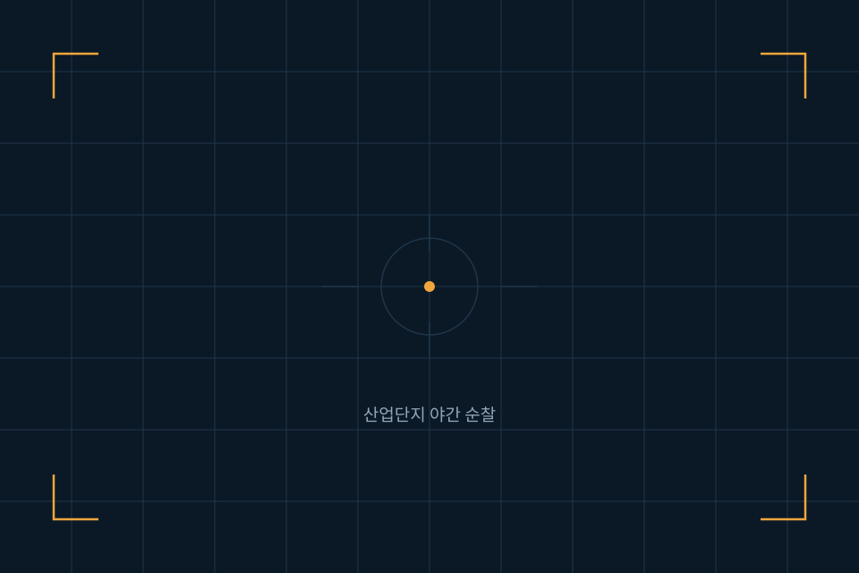
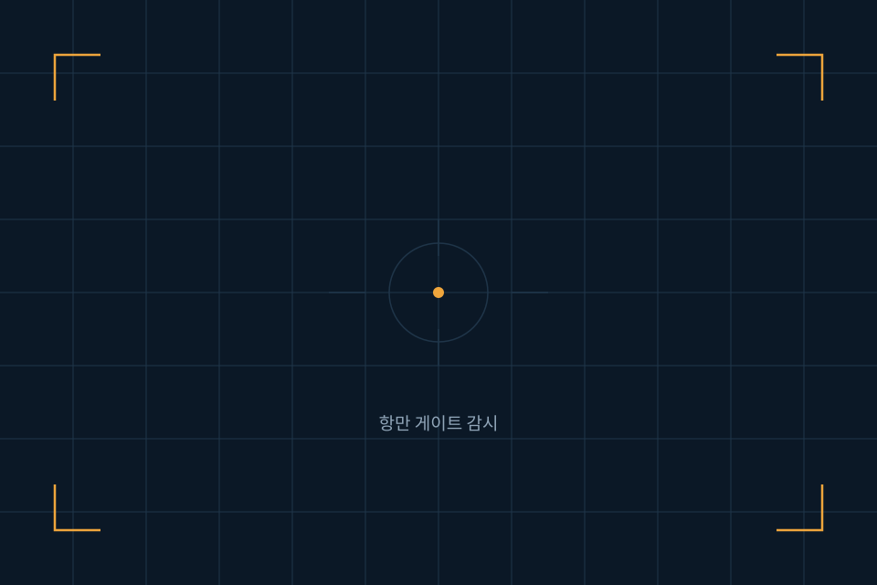

사업분야
현장마다 지켜야 할 것이 다릅니다
같은 드론이라도 공장에서는 울타리를, 항만에서는 화물의 이동을, 발전소에서는 설비의 온도를 봅니다. 에스드론는 다섯 개 분야에서 현장별 운용 방식을 따로 설계합니다.
산업단지 · 제조 공장
외곽 울타리와 야적장을 정해진 시간마다 순찰합니다. 자재 무단 반출, 울타리 훼손, 야간 무단 출입을 초기에 잡아냅니다.
- CCTV 사각지대 보완 순찰
- 야간 경비 인력 순찰 횟수 대체
공항 · 항만
넓은 제한구역의 경계선과 야드를 감시합니다. 컨테이너 적치 상태와 게이트 주변 차량 흐름을 함께 기록합니다.
- 제한구역 무단 진입 탐지
- 야드 적치 현황 주기 촬영
발전소 · 에너지 설비
송전 설비와 태양광·풍력 단지처럼 사람이 오르내리기 위험한 구조물을 열화상으로 점검합니다.
- 과열 지점 조기 발견
- 고소 작업 점검 횟수 감소
해수욕장 · 해안선 안전 순찰
드론이 해안선을 따라 순찰하며 물놀이 사고 위험과 낚시 금지구역 진입을 실시간으로 포착해 관제센터와 담당자에게 전달합니다.
- 익수 위험 상황 조기 발견
- 낚시·출입 금지구역 무단 진입 감시
공공 안전 · 재난 대응
지자체와 공공기관의 취약 지역 순찰, 산불 감시, 재난 현장 초기 상황 파악을 지원합니다.
- 현장 도착 전 상황 영상 확보
- 대피 안내 방송 장비 탑재
드론 운용 대행 서비스
장비 없이 운용만 맡기고 싶은 곳을 위해, 비행 승인부터 순찰 보고서 제출까지 전체 업무를 대행합니다.
- 비행 승인 및 안전관리 대행
- 월간 순찰 보고서 제공
도입 절차
첫 상담부터 정식 운용까지 보통 8주에서 12주가 걸립니다.
1단계 · 1~2주
현장 진단
부지 도면과 기존 경비 체계를 확인하고, 드론으로 대체 가능한 순찰 구간을 찾습니다.
2단계 · 2~3주
설계 및 승인
비행 경로와 스테이션 위치를 정하고, 필요한 비행 승인과 촬영 허가를 대행합니다.
3단계 · 3~4주
설치 및 시범 운용
장비를 설치하고 4주간 시범 운용하며 경로와 알림 기준을 현장에 맞게 조정합니다.
4단계 · 상시
정식 운용과 정비
운용을 시작하고 분기별 점검, 부품 교체, 소프트웨어 업데이트를 이어갑니다.
도입 사례
실제 운용 중인 현장에서 확인된 변화입니다.

야간 도보 순찰 6회를 드론 순찰 10회로 전환, 순찰 1회 소요 시간 55분에서 12분으로 단축.

야드 적치 현황을 2시간 간격으로 자동 기록해 수작업 점검 업무를 줄임.